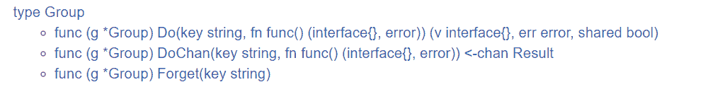

17｜SingleFlight 和 CyclicBarrier：請求合併和迴圈柵欄該怎麼用？
你好，我是鳥窩。
本章導讀
SingleFlight + CyclicBarrier（兩種不同用途）
A. SingleFlight（請求合併）
請求A ─┐
請求B ─┼──> [同一 key] -> 只執行 1 次 -> 結果廣播給等待者
請求C ─┘
B. CyclicBarrier（分批同步）
worker1 ─┐
worker2 ─┼──> [barrier 點] -> 全員到齊 -> 一起往下執行（可重複使用）
worker3 ─┘
這節課，我來給你介紹兩個非常重要的擴充套件併發原語：SingleFlight 和 CyclicBarrier。SingleFlight 的作用是將併發請求合併成一個請求，以減少對下層服務的壓力；而 CyclicBarrier 是一個可重用的柵欄併發原語，用來控制一組請求同時執行的資料結構。
其實，它們兩個並沒有直接的關係，只是內容相對來說比較少，所以我打算用最短的時間帶你掌握它們。一節課就能掌握兩個“武器”，是不是很高效？
請求合併 SingleFlight
SingleFlight 是 Go 開發組提供的一個擴充套件併發原語。它的作用是，在處理多個 goroutine 同時呼叫同一個函式的時候，只讓一個 goroutine 去呼叫這個函式，等到這個 goroutine 返回結果的時候，再把結果返回給這幾個同時呼叫的 goroutine，這樣可以減少併發呼叫的數量。
這裡我想先回答一個問題：標準庫中的 sync.Once 也可以保證併發的 goroutine 只會執行一次函式 f，那麼，SingleFlight 和 sync.Once 有什麼區別呢？
其實，sync.Once 不是隻在併發的時候保證只有一個 goroutine 執行函式 f，而是會保證永遠只執行一次，而 SingleFlight 是每次呼叫都重新執行，並且在多個請求同時呼叫的時候只有一個執行。它們兩個面對的場景是不同的，sync.Once 主要是用在單次初始化場景中，而 SingleFlight 主要用在合併併發請求的場景中，尤其是快取場景。
如果你學會了 SingleFlight，在面對秒殺等大併發請求的場景，而且這些請求都是讀請求時，你就可以把這些請求合併為一個請求，這樣，你就可以將後端服務的壓力從 n 降到 1。尤其是在面對後端是資料庫這樣的服務的時候，採用 SingleFlight 可以極大地提高效能。那麼，話不多說，就讓我們開始學習 SingleFlight 吧。
實作原理
SingleFlight 使用互斥鎖 Mutex 和 Map 來實作。Mutex 提供併發時的讀防寫，Map 用來儲存同一個 key 的正在處理（in flight）的請求。
SingleFlight 的資料結構是 Group，它提供了三個方法。

- Do：這個方法執行一個函式，並返回函式執行的結果。你需要提供一個 key，對於同一個 key，在同一時間只有一個在執行，同一個 key 併發的請求會等待。第一個執行的請求返回的結果，就是它的返回結果。函式 fn 是一個無參的函式，返回一個結果或者 error，而 Do 方法會返回函式執行的結果或者是 error，shared 會指示 v 是否返回給多個請求。
- DoChan：類似 Do 方法，只不過是返回一個 chan，等 fn 函式執行完，產生了結果以後，就能從這個 chan 中接收這個結果。
- Forget：告訴 Group 忘記這個 key。這樣一來，之後這個 key 請求會執行 f，而不是等待前一個未完成的 fn 函式的結果。
下面，我們來看具體的實作方法。
首先，SingleFlight 定義一個輔助物件 call，這個 call 就代表正在執行 fn 函式的請求或者是已經執行完的請求。Group 代表 SingleFlight。
// 代表一個正在處理的請求，或者已經處理完的請求
type call struct {
wg sync.WaitGroup
// 這個欄位代表處理完的值，在waitgroup完成之前只會寫一次
// waitgroup完成之後就讀取這個值
val interface{}
err error
// 指示當call在處理時是否要忘掉這個key
forgotten bool
dups int
chans []chan<- Result
}
// group代表一個singleflight物件
type Group struct {
mu sync.Mutex // protects m
m map[string]*call // lazily initialized
}
我們只需要檢視一個 Do 方法，DoChan 的處理方法是類似的。
func (g *Group) Do(key string, fn func() (interface{}, error)) (v interface{}, err error, shared bool) {
g.mu.Lock()
if g.m == nil {
g.m = make(map[string]*call)
}
if c, ok := g.m[key]; ok {//如果已經存在相同的key
c.dups++
g.mu.Unlock()
c.wg.Wait() //等待這個key的第一個請求完成
return c.val, c.err, true //使用第一個key的請求結果
}
c := new(call) // 第一個請求，建立一個call
c.wg.Add(1)
g.m[key] = c //加入到key map中
g.mu.Unlock()
g.doCall(c, key, fn) // 呼叫方法
return c.val, c.err, c.dups > 0
}
doCall 方法會實際呼叫函式 fn：
func (g *Group) doCall(c *call, key string, fn func() (interface{}, error)) {
c.val, c.err = fn()
c.wg.Done()
g.mu.Lock()
if !c.forgotten { // 已呼叫完，刪除這個key
delete(g.m, key)
}
for _, ch := range c.chans {
ch <- Result{c.val, c.err, c.dups > 0}
}
g.mu.Unlock()
}
在這段程式碼中，你要注意下第 7 行。在預設情況下，forgotten==false，所以第 8 行預設會被呼叫，也就是說，第一個請求完成後，後續的同一個 key 的請求又重新開始新一次的 fn 函式的呼叫。
Go 標準庫的程式碼中就有一個 SingleFlight 的實作，而擴充套件庫中的 SingleFlight 就是在標準庫的程式碼基礎上改的，邏輯幾乎一模一樣，我就不多說了。
應用場景
瞭解了 SingleFlight 的實作原理，下面我們來看看它都應用於什麼場景中。
Go 程式碼庫中有兩個地方用到了 SingleFlight。
第一個是在net/lookup.go中，如果同時有查詢同一個 host 的請求，lookupGroup 會把這些請求 merge 到一起，只需要一個請求就可以了：
// lookupGroup merges LookupIPAddr calls together for lookups for the same
// host. The lookupGroup key is the LookupIPAddr.host argument.
// The return values are ([]IPAddr, error).
lookupGroup singleflight.Group
第二個是 Go 在查詢倉庫版本資訊時，將併發的請求合併成 1 個請求：
func metaImportsForPrefix(importPrefix string, mod ModuleMode, security web.SecurityMode) (*urlpkg.URL, []metaImport, error) {
// 使用快取儲存請求結果
setCache := func(res fetchResult) (fetchResult, error) {
fetchCacheMu.Lock()
defer fetchCacheMu.Unlock()
fetchCache[importPrefix] = res
return res, nil
// 使用 SingleFlight請求
resi, _, _ := fetchGroup.Do(importPrefix, func() (resi interface{}, err error) {
fetchCacheMu.Lock()
// 如果快取中有資料，那麼直接從快取中取
if res, ok := fetchCache[importPrefix]; ok {
fetchCacheMu.Unlock()
return res, nil
}
fetchCacheMu.Unlock()
......
需要注意的是，這裡涉及到了快取的問題。上面的程式碼會把結果放在快取中，這也是常用的一種解決快取擊穿的例子。
設計快取問題時，我們常常需要解決快取穿透、快取雪崩和快取擊穿問題。快取擊穿問題是指，在平常高併發的系統中，大量的請求同時查詢一個 key 時，如果這個 key 正好過期失效了，就會導致大量的請求都打到資料庫上。這就是快取擊穿。
用 SingleFlight 來解決快取擊穿問題再合適不過了。因為，這個時候，只要這些對同一個 key 的併發請求的其中一個到資料庫中查詢，就可以了，這些併發的請求可以共享同一個結果。因為是快取查詢，不用考慮冪等性問題。
事實上，在 Go 生態圈知名的快取框架 groupcache 中，就使用了較早的 Go 標準庫的 SingleFlight 實作。接下來，我就來給你介紹一下 groupcache 是如何使用 SingleFlight 解決快取擊穿問題的。
groupcache 中的 SingleFlight 只有一個方法：
func (g *Group) Do(key string, fn func() (interface{}, error)) (interface{}, error)
SingleFlight 的作用是，在載入一個快取項的時候，合併對同一個 key 的 load 的併發請求：
type Group struct {
。。。。。。
// loadGroup ensures that each key is only fetched once
// (either locally or remotely), regardless of the number of
// concurrent callers.
loadGroup flightGroup
......
}
func (g *Group) load(ctx context.Context, key string, dest Sink) (value ByteView, destPopulated bool, err error) {
viewi, err := g.loadGroup.Do(key, func() (interface{}, error) {
// 從cache, peer, local嘗試查詢cache
return value, nil
})
if err == nil {
value = viewi.(ByteView)
}
return
}
其它的知名專案如 Cockroachdb（小強資料庫）、CoreDNS（DNS 伺服器）等都有 SingleFlight 應用，你可以檢視這些專案的程式碼，加深對 SingleFlight 的理解。
總結來說，使用 SingleFlight 時，可以透過合併請求的方式降低對下游服務的併發壓力，從而提高系統的效能，常常用於快取系統中。最後，我想給你留一個思考題，你覺得，SingleFlight 能不能合併併發的寫操作呢？
迴圈柵欄 CyclicBarrier
接下來，我再給你介紹另外一個併發原語：迴圈柵欄（CyclicBarrier），它常常應用於重複進行一組 goroutine 同時執行的場景中。
CyclicBarrier允許一組 goroutine 彼此等待，到達一個共同的執行點。同時，因為它可以被重複使用，所以叫迴圈柵欄。具體的機制是，大家都在柵欄前等待，等全部都到齊了，就抬起柵欄放行。
事實上，這個 CyclicBarrier 是參考Java CyclicBarrier和C# Barrier的功能實作的。Java 提供了 CountDownLatch（倒計時器）和 CyclicBarrier（迴圈柵欄）兩個類似的用於保證多執行緒到達同一個執行點的類，只不過前者是到達 0 的時候放行，後者是到達某個指定的數的時候放行。C# Barrier 功能也是類似的，你可以檢視連結，瞭解它的具體用法。
你可能會覺得，CyclicBarrier 和 WaitGroup 的功能有點類似，確實是這樣。不過，CyclicBarrier 更適合用在“固定數量的 goroutine 等待同一個執行點”的場景中，而且在放行 goroutine 之後，CyclicBarrier 可以重複利用，不像 WaitGroup 重用的時候，必須小心翼翼避免 panic。
處理可重用的多 goroutine 等待同一個執行點的場景的時候，CyclicBarrier 和 WaitGroup 方法呼叫的對應關係如下：

可以看到，如果使用 WaitGroup 實作的話，呼叫比較複雜，不像 CyclicBarrier 那麼清爽。更重要的是，如果想重用 WaitGroup，你還要保證，將 WaitGroup 的計數值重置到 n 的時候不會出現併發問題。
WaitGroup 更適合用在“一個 goroutine 等待一組 goroutine 到達同一個執行點”的場景中，或者是不需要重用的場景中。
好了，瞭解了 CyclicBarrier 的應用場景和功能，下面我們來學習下它的具體實作。
實作原理
CyclicBarrier 有兩個初始化方法：
- 第一個是 New 方法，它只需要一個引數，來指定迴圈柵欄參與者的數量；
- 第二個方法是 NewWithAction，它額外提供一個函式，可以在每一次到達執行點的時候執行一次。具體的時間點是在最後一個參與者到達之後，但是其它的參與者還未被放行之前。我們可以利用它，做放行之前的一些共享狀態的更新等操作。
這兩個方法的簽名如下：
func New(parties int) CyclicBarrier
func NewWithAction(parties int, barrierAction func() error) CyclicBarrier
CyclicBarrier 是一個介面，定義的方法如下：
type CyclicBarrier interface {
// 等待所有的參與者到達，如果被ctx.Done()中斷，會返回ErrBrokenBarrier
Await(ctx context.Context) error
// 重置迴圈柵欄到初始化狀態。如果當前有等待者，那麼它們會返回ErrBrokenBarrier
Reset()
// 返回當前等待者的數量
GetNumberWaiting() int
// 參與者的數量
GetParties() int
// 迴圈柵欄是否處於中斷狀態
IsBroken() bool
}
迴圈柵欄的使用也很簡單。迴圈柵欄的參與者只需呼叫 Await 等待，等所有的參與者都到達後，再執行下一步。當執行下一步的時候，迴圈柵欄的狀態又恢復到初始的狀態了，可以迎接下一輪同樣多的參與者。
有一道非常經典的併發程式設計的題目，非常適合使用迴圈柵欄，下面我們來看一下。
併發趣題：一氧化二氫製造工廠
題目是這樣的：
有一個名叫大自然的搬運工的工廠，生產一種叫做一氧化二氫的神秘液體。這種液體的分子是由一個氧原子和兩個氫原子組成的，也就是水。
這個工廠有多條生產線，每條生產線負責生產氧原子或者是氫原子，每條生產線由一個 goroutine 負責。
這些生產線會透過一個柵欄，只有一個氧原子生產線和兩個氫原子生產線都準備好，才能生成出一個水分子，否則所有的生產線都會處於等待狀態。也就是說，一個水分子必須由三個不同的生產線提供原子，而且水分子是一個一個按照順序產生的，每生產一個水分子，就會打印出 HHO、HOH、OHH 三種形式的其中一種。HHH、OOH、OHO、HOO、OOO 都是不允許的。
生產線中氫原子的生產線為 2N 條，氧原子的生產線為 N 條。
你可以先想一下，我們怎麼來實作呢？
首先，我們來定義一個 H2O 輔助資料型別，它包含兩個訊號量的欄位和一個迴圈柵欄。
- semaH 訊號量：控制氫原子。一個水分子需要兩個氫原子，所以，氫原子的空槽數資源數設定為 2。
- semaO 訊號量：控制氧原子。一個水分子需要一個氧原子，所以資源數的空槽數設定為 1。
- 迴圈柵欄：等待兩個氫原子和一個氧原子填補空槽，直到任務完成。
我們來看下具體的程式碼：
package water
import (
"context"
"github.com/marusama/cyclicbarrier"
"golang.org/x/sync/semaphore"
)
// 定義水分子合成的輔助資料結構
type H2O struct {
semaH *semaphore.Weighted // 氫原子的訊號量
semaO *semaphore.Weighted // 氧原子的訊號量
b cyclicbarrier.CyclicBarrier // 迴圈柵欄，用來控制合成
}
func New() *H2O {
return &H2O{
semaH: semaphore.NewWeighted(2), //氫原子需要兩個
semaO: semaphore.NewWeighted(1), // 氧原子需要一個
b: cyclicbarrier.New(3), // 需要三個原子才能合成
}
}
接下來，我們看看各條流水線的處理情況。
流水線分為氫原子處理流水線和氧原子處理流水線，首先，我們先看一下氫原子的流水線：如果有可用的空槽，氫原子的流水線的處理方法是 hydrogen，hydrogen 方法就會佔用一個空槽（h2o.semaH.Acquire），輸出一個 H 字元，然後等待柵欄放行。等其它的 goroutine 填補了氫原子的另一個空槽和氧原子的空槽之後，程式才可以繼續進行。
func (h2o *H2O) hydrogen(releaseHydrogen func()) {
h2o.semaH.Acquire(context.Background(), 1)
releaseHydrogen() // 輸出H
h2o.b.Await(context.Background()) //等待柵欄放行
h2o.semaH.Release(1) // 釋放氫原子空槽
}
然後是氧原子的流水線。氧原子的流水線處理方法是 oxygen， oxygen 方法是等待氧原子的空槽，然後輸出一個 O，就等待柵欄放行。放行後，釋放氧原子空槽位。
func (h2o *H2O) oxygen(releaseOxygen func()) {
h2o.semaO.Acquire(context.Background(), 1)
releaseOxygen() // 輸出O
h2o.b.Await(context.Background()) //等待柵欄放行
h2o.semaO.Release(1) // 釋放氫原子空槽
}
在柵欄放行之前，只有兩個氫原子的空槽位和一個氧原子的空槽位。只有等柵欄放行之後，這些空槽位才會被釋放。柵欄放行，就意味著一個水分子組成成功。
這個演算法是不是正確呢？我們來編寫一個單元測試檢測一下。
package water
import (
"math/rand"
"sort"
"sync"
"testing"
"time"
)
func TestWaterFactory(t *testing.T) {
//用來存放水分子結果的channel
var ch chan string
releaseHydrogen := func() {
ch <- "H"
}
releaseOxygen := func() {
ch <- "O"
}
// 300個原子，300個goroutine,每個goroutine併發的產生一個原子
var N = 100
ch = make(chan string, N*3)
h2o := New()
// 用來等待所有的goroutine完成
var wg sync.WaitGroup
wg.Add(N * 3)
// 200個氫原子goroutine
for i := 0; i < 2*N; i++ {
go func() {
time.Sleep(time.Duration(rand.Intn(100)) * time.Millisecond)
h2o.hydrogen(releaseHydrogen)
wg.Done()
}()
}
// 100個氧原子goroutine
for i := 0; i < N; i++ {
go func() {
time.Sleep(time.Duration(rand.Intn(100)) * time.Millisecond)
h2o.oxygen(releaseOxygen)
wg.Done()
}()
}
//等待所有的goroutine執行完
wg.Wait()
// 結果中肯定是300個原子
if len(ch) != N*3 {
t.Fatalf("expect %d atom but got %d", N*3, len(ch))
}
// 每三個原子一組，分別進行檢查。要求這一組原子中必須包含兩個氫原子和一個氧原子，這樣才能正確組成一個水分子。
var s = make([]string, 3)
for i := 0; i < N; i++ {
s[0] = <-ch
s[1] = <-ch
s[2] = <-ch
sort.Strings(s)
water := s[0] + s[1] + s[2]
if water != "HHO" {
t.Fatalf("expect a water molecule but got %s", water)
}
}
}總結每一個併發原語都有它存在的道理，也都有它應用的場景。
如果你沒有學習 CyclicBarrier，你可能只會想到，用 WaitGroup 來實作這個水分子製造工廠的例子。
type H2O struct {
semaH *semaphore.Weighted
semaO *semaphore.Weighted
wg sync.WaitGroup //將迴圈柵欄替換成WaitGroup
}
func New() *H2O {
var wg sync.WaitGroup
wg.Add(3)
return &H2O{
semaH: semaphore.NewWeighted(2),
semaO: semaphore.NewWeighted(1),
wg: wg,
}
}
func (h2o *H2O) hydrogen(releaseHydrogen func()) {
h2o.semaH.Acquire(context.Background(), 1)
releaseHydrogen()
// 標記自己已達到，等待其它goroutine到達
h2o.wg.Done()
h2o.wg.Wait()
h2o.semaH.Release(1)
}
func (h2o *H2O) oxygen(releaseOxygen func()) {
h2o.semaO.Acquire(context.Background(), 1)
releaseOxygen()
// 標記自己已達到，等待其它goroutine到達
h2o.wg.Done()
h2o.wg.Wait()
//都到達後重置wg
h2o.wg.Add(3)
h2o.semaO.Release(1)
}
你一看程式碼就知道了，使用 WaitGroup 非常複雜，而且，重用和 Done 方法的呼叫有併發的問題，程式可能 panic，遠遠沒有使用迴圈柵欄更加簡單直接。
所以，我建議你多瞭解一些併發原語，甚至是從其它程式語言、作業系統中學習更多的併發原語，這樣可以讓你的知識庫更加豐富，在面對併發場景的時候，你也能更加遊刃有餘。

思考題
如果大自然的搬運工工廠生產的液體是雙氧水（雙氧水分子是兩個氫原子和兩個氧原子），你又該怎麼實作呢？
歡迎在留言區寫下你的思考和答案，我們一起交流討論。如果你覺得有所收穫，也歡迎你把今天的內容分享給你的朋友或同事。